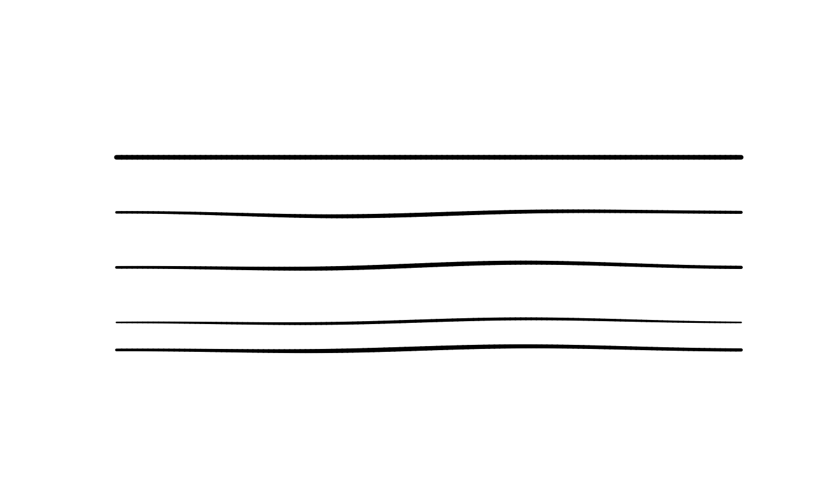

human_hand() is the same as hand(), but starts from rougher defaults with
bow, wobble, width jitter, and human-style pressure and speed profiles
enabled.
Usage
hand(
seed = NULL,
bow = 0,
wobble = 0,
multi_stroke = 1L,
width_jitter = 0,
endpoint_jitter = 0,
pressure = pressure_flat(),
speed = speed_flat(),
xtilt = 0,
ytilt = 0,
barrel_rotation = 0
)
human_hand(
seed = NULL,
bow = 0.004,
wobble = 0.004,
multi_stroke = 1L,
width_jitter = 0.08,
endpoint_jitter = 0,
pressure = pressure_human(),
speed = speed_human(),
xtilt = 0,
ytilt = 0,
barrel_rotation = 0
)Arguments
- seed
Optional random seed used for repeatable geometry.
- bow
Typical bowing of long strokes as a proportion of segment length.
- wobble
Low-frequency path wobble as a proportion of segment length.
- multi_stroke
Number of overdrawn strokes to use.
- width_jitter
Relative variation in line width between overdrawn strokes.
- endpoint_jitter
Relative endpoint jitter as a proportion of segment length.
- pressure
Pressure profile function, typically created with
pressure_flat(),pressure_smooth(), orpressure_human(). A single number is treated aspressure_flat(pressure).- speed
Speed profile function, typically created with
speed_flat()orspeed_human(). A single positive number is treated asspeed_flat(speed). Speed profiles affectmypaint_device()brush rendering only.- xtilt, ytilt
Stylus tilt inputs passed to libmypaint, in its normalized
-1to1range.- barrel_rotation
Stylus barrel rotation, in degrees.
Value
An object describing how rough geometry should be generated.
An object describing how rough geometry should be generated.
Details
hand() defaults to plain, base-R-like geometry with no bowing, wobble, or
jitter and flat pressure and speed. human_hand() has different, more
human-like defaults, including pressure_human() and speed_human().
Pressure and speed profile functions are called with t, turn, and
length, where length is the total stroke length in device units.
The speed, xtilt, ytilt, and barrel_rotation arguments affect only
brush rendering on mypaint_device(). They are ignored by standard graphics
devices.
Examples
plot.new()
plot.window(c(0, 10), c(0, 10))
draw_rough_lines(c(0, 10), c(8, 8), lwd = 4, hand = hand())
draw_rough_lines(c(0, 10), c(6, 6), lwd = 4, hand = human_hand())
draw_rough_lines(c(0, 10), c(4, 4), lwd = 4,
hand = human_hand(seed = 1,
bow = 0.02, wobble = 0.01))
draw_rough_lines(c(0, 10), c(2, 2), lwd = 4,
hand = human_hand(seed = 1,
pressure = pressure_smooth(0.7, taper = 0.5)))
draw_rough_lines(c(0, 10), c(1, 1), lwd = 4,
hand = human_hand(seed = 1,
pressure = pressure_human()))
